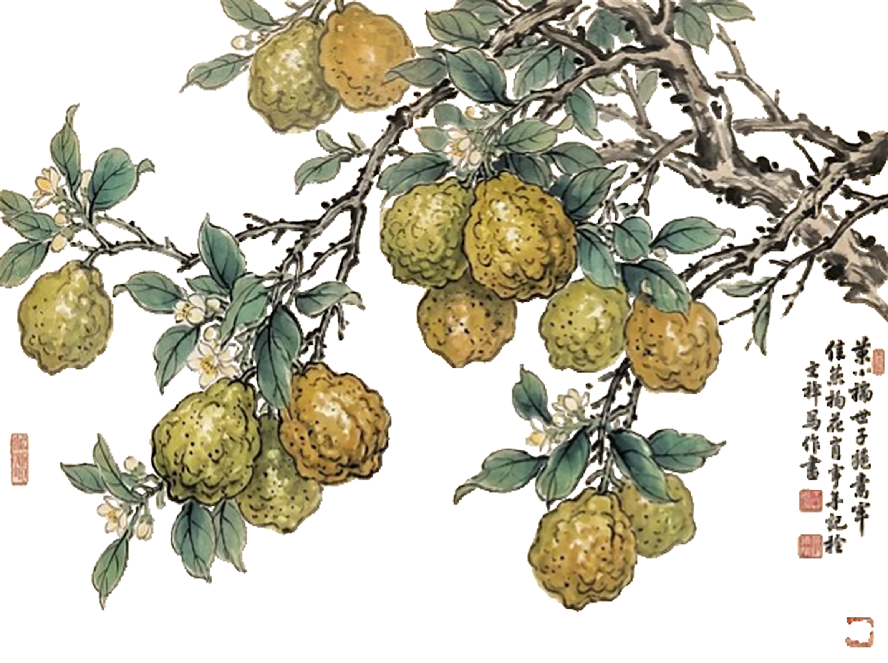
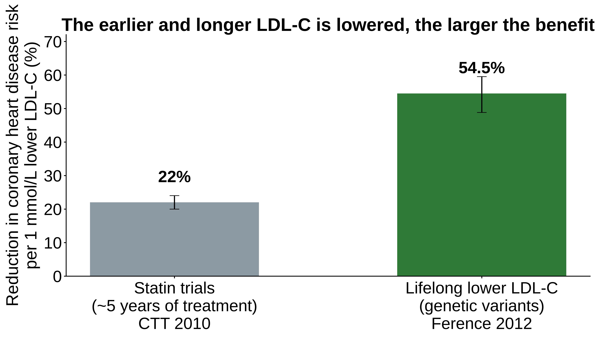
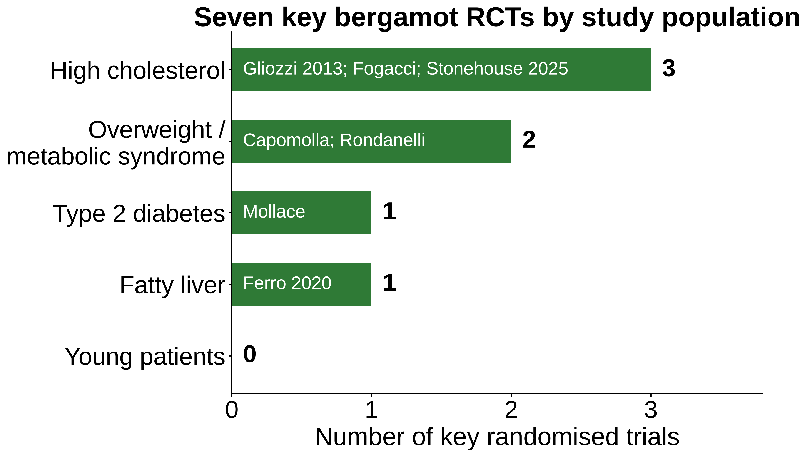
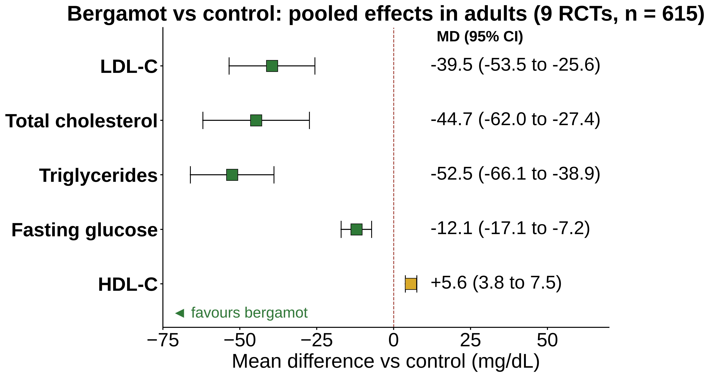

Can early bergamot delay statins in young patients with high cholesterol?
Noor Al Ahmad|Supervised by Dr Amira|Department of Pharmacy, Al Ain University, Al Ain, UAE

Citrus bergamia — fruit, flower, branch
1
Why citrus bergamot?
A
The plant
Citrus bergamia grows almost only in Calabria, Italy, and its juice is unusually rich in flavanones.
B
The molecules
Two of those flavanones — brutieridin and melitidin — carry a statin-like side chain.
C
The target
They are proposed to inhibit HMG-CoA reductase, the same enzyme that statins block.
Proposed, not proven
A detail of the branch at the centre of this poster — the fruit whose juice carries the flavanones.
Did you know?
Statins came from nature too: compactin was isolated from Penicillium citrinum (Endo, 1976), and lovastatin, from Aspergillus terreus, became the first FDA-approved statin in 1987.
2
How bergamot may work
Mechanisms are proposed, mainly from laboratory and small human studies.
3
Statin vs bergamot
Statin
Citrus bergamot
Target
HMG-CoA reductase Proven
Same enzyme Proposed
LDL-C lowering
30–50% or more
≈ 40 mg/dL (adults)
Other effects
Small rise in diabetes risk
↓ glucose, TG, BP, liver fat
Evidence
Large outcome trials Strong
Small RCTs Low
Young patients
Guideline use in FH
Not yet tested
Role
Treatment when indicated
Early step before statins?
Statin figures from large outcome trials and guideline summaries; bergamot figures from pooled adult randomised trials.
4
The problem
It starts in youth
Starts early: childhood risk factors predict adult cardiovascular events (38,589 people followed for 35 years).
Cumulative: 1 mmol/L lower LDL-C from early life ≈ 55% less coronary disease.
Jacobs, NEJM 2022 · Ference, JACC 2012
5
The gap
Nobody has tested the young
All 7 key bergamot RCTs were in adults, and one found no effect on LDL-C (Stonehouse 2025).
No trial in young patients yet
6
Finding them early
Early risk detection
1Family history: premature heart disease in a close relative
2Lipid profile: LDL-C, triglycerides, HDL-C, apoB
3Lipoprotein(a): genetically determined; measure once
Universal lipid screening at 9–11 and 17–21 years (NHLBI 2011); Lp(a) once (EAS 2022).
7
Who gets what
Two pathways
Hypothesis pathway
High cholesterol below statin criteria, no monogenic variant: lifestyle + bergamot, re-check every 6–12 months.
Guideline care
Monogenic FH or very high LDL-C: statin as indicated. Bergamot is not a substitute.
8
The hypothesis
Starting Citrus bergamot early in young patients with high cholesterol, who do not yet meet statin criteria, will lower LDL-C and linked cardiometabolic risk factors, and delay the need for statin therapy in the long run.
What the evidence shows
The principle behind the hypothesis

Lifelong lower LDL-C roughly doubles the per-mmol/L benefit seen in 5-year statin trials — the cumulative-exposure principle behind starting early. Error bars 95% CI. CTT, Lancet 2010; Ference, JACC 2012.
Who has been studied?

All 7 key bergamot RCTs were in adults, and one found no effect on LDL-C (Stonehouse 2025). No trial in young patients yet.
Bergamot effects in adult RCTs

Pooled from 9 RCTs, 615 adults (Chambari, Food Sci Nutr 2026). Every interval excludes zero. GRADE certainty: low to very low.
How large, and in whom?
Left: 14 trials; 9 RCTs; network meta-analysis, 95% CI where reported. Right: controlled attenuation parameter, Ferro 2020, n = 102.
Other pooled outcomes
HOMA-IR
−0.38 (−0.65 to −0.11)
Systolic BP
−2.1 mmHg (−3.3 to −0.9)
Waist
−0.96 cm (−1.91 to −0.01)
GRADE certainty: low to very low
Mean difference vs control; pooled from 9 RCTs, 615 adults (Chambari 2026). Every interval excludes zero.
How to test the hypothesis
1
Recruit
Young patients with high cholesterol
2
Screen
Lipids, Lp(a), genetic score, metabolic signs
3
Sort
Monogenic FH → statin care; others enrolled
4
Randomise
Bergamot vs placebo, with lifestyle advice
5
Follow up
12 months; adherence, safety, growth
6
Measure
LDL-C, apoB, glucose, BP, liver fat
7
Long term
Time until a statin is needed
Conclusion
Atherosclerosis begins in youth and LDL-C damage accumulates over time. Citrus bergamot may improve several cardiometabolic risk factors in adults, making it a strong candidate to test as an early step to delay statin therapy in young patients.